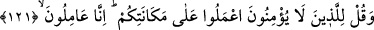
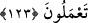
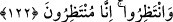

ELİNİZDEN GELENİ YAPIN
121. İman etmeyenlere de ki: “Elinizden geleni yapın! Biz de (gerekeni)
yapmaktayız.”
122. “Bekleyin! Şüphesiz biz de bekliyoruz!”
123. Göklerin ve yerin gaybı (sırrı) yalnız Allah’a aittir. Her iş O’na döndürülür.
Öyleyse O’na kulluk et ve O’na tevekkül et! Rabb’in yaptıklarınızdan gafil
değildir.
Gerek Mekkeliler’den gerekse diğerlerinden bu hakka “iman etmeyenlere”, ondan
öğüt ve ibret almayanlara “de ki: “Elinizden geleni” îmansızlığınızın gereğini “yapın!
Biz de” hakka îmân etme, ondan öğüt ve ibret alma gibi güzel tutum ve davranışımızın
gereğini “yapıyoruz.”
122. “Bekleyin! Şüphesiz biz de bekliyoruz!”
Şeytanın bizim başımıza geleceğini size vaadettiği musîbetleri “bekleyin! Şüphesiz
biz de” Rahman Teâlâ’nın vâdettiği üzere size benzeyen kâfirlerin başına gelmiş
bulunan azapların sizin başınıza da gelmesini “bekliyoruz.”
Bu ifade, onlar için bir tehdiddir. Çünkü bu âyet kılıç ve kıtal âyetiyle (et-Tevbe, 9/5)
nesh edilmiştir.
Bilesin ki kalpleri teskin edip pekiştirme, sadece din üzerinde olmakla ve başkasına
değil, sadece Allah’a itâat etmekle gerçekleşir. Çünkü Allah Teâlâ bu fiili kendi zât-ı
kerîmine isnad etmiştir. Kalplerin O’nun tarafından pekiştirilmesi vasıta ile olabileceği
gibi vasıtasız da olabilir.
Vâsıtalı olana gelince bu, 120. âyetteki: “Peygamberlerin haberlerinden senin
kalbini (tatmin ve) teskin edeceğimiz…” ifadesinde ve “Allah Teâlâ sağlam sözle
îmân edenleri hem dünya hayatında hem de ahirette sapasağlam tutar.” (İbrahim,
14/27) ifadesinde görülmektedir.